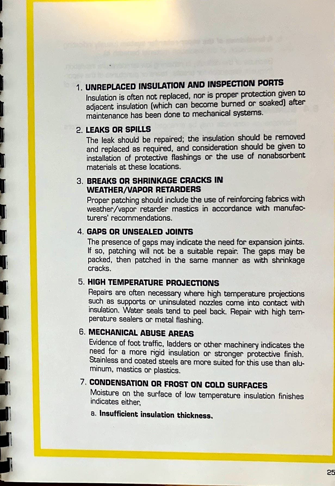
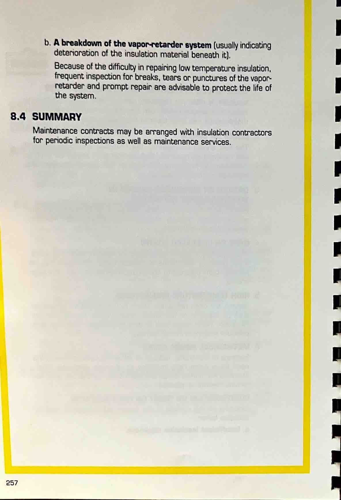
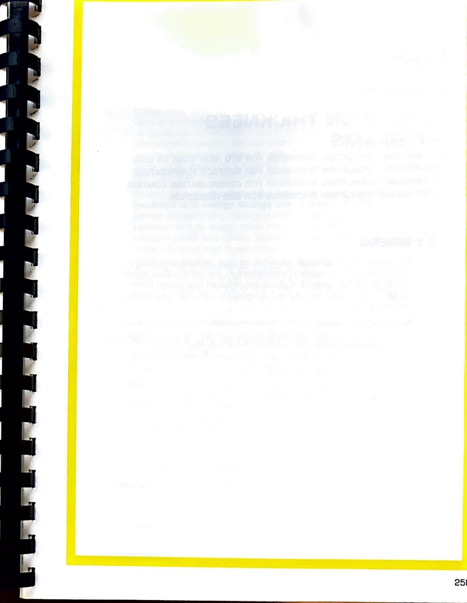

Section VIII - Maintenance
Page 265

nuca SECTION VIII MAINTENANCE 8.1 GENERAL Properly designed and installed insulation systems should normally require little maintenance.
However, there are instances when maintenance and maintenance inspections are necessary.
8.2 INSULATION MAINTENANCE AFTER REPAIRS TO MECHANICAL SYSTEMS Generally, reinsulation after mechanical repairs is performed in the same manner as the original installation unless: 1.
The nature of the damage to the insulation indicates that the system was not insulated properly (i.e.
flashings need to be used where spills and leaks occur, greater thicknesses are necessary where condensation occurs, expansion joints may be indicated where large cracks or gaps occur, etc.), or 2.
The materials originally used are now outdated.
Care should be taken in removal of existing insulation materials as many may be reapplied or reused.
Preformed and pre-fabricated cov- ers for valves, fangs, etc., can be carefully removed and salvaged.
Temporary protection should be provided to adjacent insulations to prevent damage while repairs are underway.
8.3 MAINTENANCE INSPECTION AND METHODS The major concern in maintenance of high or low temperature insu- lations is promptness in discovering and reinsulating to avoid costly heat loss or eventual destruction of the total system.
For this reason periodic inspections should be conducted to detect the following: 255
Page 266

1.
UNREPLACED INSULATION AND INSPECTION PORTS Insulation is often not replaced, nor is proper protection given to adjacent insulation (which can become burned or soaked) after maintenance has been done to mechanical systems.
2.
LEAKS OR SPILLS The leak should be repaired; the insulation should be removed and replaced as required, and consideration should be given to installation of protective flashings or the use of nonabsorbent materials at these locations.
3.
BREAKS OR SHRINKAGE CRACKS IN WEATHER/VAPOR RETARDERS Proper patching should include the use of reinforcing fabrics with weather/vapor retarder mastics in accordance with manufac- turers' recommendations.
4.
GAPS OR UNSEALED JOINTS The presence of gaps may indicate the need for expansion joints.
If so, patching will not be a suitable repair.
The gaps may be packed, then patched in the same manner as with shrinkage cracks.
5.
HIGH TEMPERATURE PROJECTIONS Repairs are often necessary where high temperature projections such as supports or uninsulated nozzles come into contact with insulation.
Water seals tend to peel back.
Repair with high tem- perature sealers or metal flashing.
6.
MECHANICAL ABUSE AREAS Evidence of foot traffic, ladders or other machinery indicates the need for a more rigid insulation or stronger protective finish.
Stainless and coated steels are more suited for this use than alu- minum, mastics or plastics.
7.
CONDENSATION OR FROST ON COLD SURFACES Moisture on the surface of low temperature insulation finishes indicates either, a.
Insufficient insulation thickness.
25
Page 267

b.
A breakdown of the vapor.retarder system (usually indicating detertoration of the insulation material beneath it).
Because of the difficulty in repainng low temperature insulation.
frequent inspection for breaks.
tears or punctures of the vapor- retarder and prompt repair are advisable to protect the life of the system.
8.4 SUMMARY Maintenance contracts may be arranged with insulation contractors for periodic inspections as well as maintenance services.
257
Page 268

251